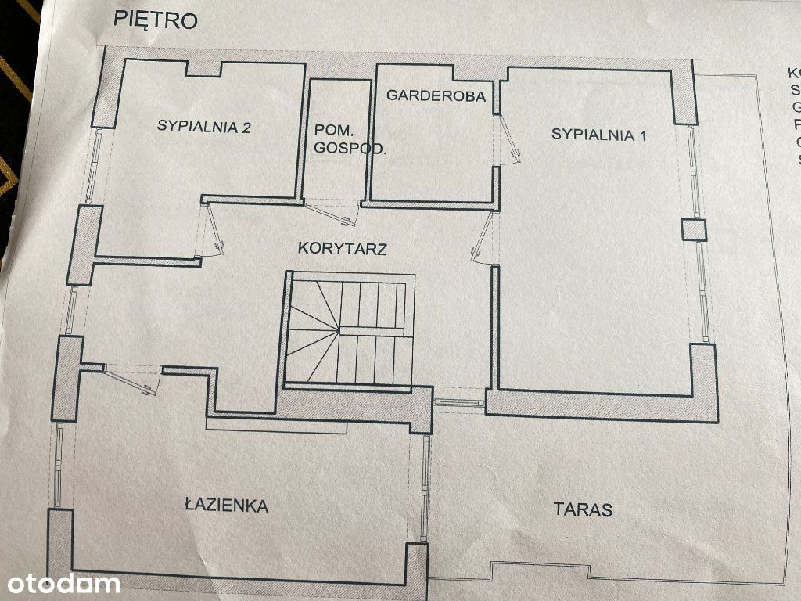
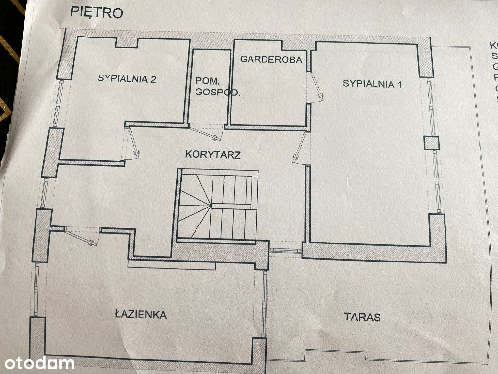

**** Ogłoszenie prywatne **** - Agencjom, Agentom dziękuję. Zapraszam do kontaktu w przypadku potencjalnego klienta.
Piękny wyjątkowo wykończony, bardzo jasny, słoneczny, dwupoziomowy apartament w niezwykle cichej i spokojnej okolicy z mnóstwem terenów zielonych rozpościerających się dookoła gdzie wzrokiem sięgnąć!
Zdecydowanie apartament należy do tych, które kradną serce od pierwszego kontaktu do którego serdecznie zachęcam po zapoznaniu się z niniejszą ofertą!
Apartament bezapelacyjnie o powierzchni dla osób wymagających i ceniących sobie komfort życia nie bagatela 147m2 usytuowany jest na dwóch ostatnich kondygnacjach budynku tj. trzecim i czwartym piętrze przy ul. Skrajnej
Niezwykle ustawny apartament składa się z niżej opisanych przestrzeni:
PARTER
PIĘTRO
Do wykończenia apartamentu wykorzystano najwyższej klasy materiały jak kamień, egzotyczne drewno czy wytworne królewskie żyrandole w designie Marii Teresy sprawiające, że dzięki dziesiątkom kryształków o niezwykłej przejrzystości i perfekcyjnym szlifie wnętrze wygląda niepowtarzalnie i gustownie.
Mebli stanowiących wyposażenie apartamentu zarówno tych na wymiar oraz tych z designerskich salonów na próżno szukać u znajomych, sąsiadów czy w sklepach pierwszego wyboru.
W Apartamencie zastaną Państwo pełne wyposażenie kuchni oraz nietuzinkowe sprzęty AGD i RTV zadowalające najbardziej wymagających koneserów dobrego smaku, bezpieczeństwa, zabawy czy relaksu:
Nieruchomość znajduje się na zamkniętym zdecydowanie kameralnym osiedlu dostępnym tylko dla mieszkańców.
Na horyzoncie w oddali widać przepiękną panoramę stolicy wprawiającą w zachwyt każdego gościa.
Wysokie okna oraz ich liczba 15szt. w całym apartamencie sprawiają, że w każdym pomieszczeniu jest widno i przestronnie a dzięki klimatyzacji oraz zewnętrznym roletom antywłamaniowym latem apartament nie zamienia się w piekarnik.
Osiedle położone jest w cichej i spokojnej okolicy domów jednorodzinnych na granicy warszawskiego Targówka i Ząbek. Dzięki czemu codziennie nie poruszamy się po Ząbkach, a po przejechaniu zaledwie 500m Jesteśmy na Targówku.
Dookoła znajduje się bardzo dużo zieleni i lasów, park, Zalew Bardowskiego z licznymi terenami rekreacyjnymi w odległości 8 min. pieszo które pozwolą wpisać relaks i spacery na świeżym powietrzu w stały rozkład dnia.
W pobliżu sklepy: Lidl, Biedronka, Kaufland, Rossmann, apteki, szkoła, przedszkola, żłobki, ścieżki rowerowe i spacerowe w lesie, place zabaw dla dzieci. Blisko do PKP Ząbki i PKP Rembertów, SKM Wilno, Metro Trocka codzienny dojazd do centrum zajmuje około 35 min.
Jeśli po spełnieniu wszystkich swoich obowiązków marzą Państwo o spokojnym, relaksującym spacerze, czy odpoczynku na własnym tarasie z dala od szumu, zgiełku, spalin to ten apartament będzie strzałem w dziesiątkę.
Wychodząc z osiedla nie musimy martwić się o nasze pociechy, droga dojazdowa do osiedla jest ślepą uliczką na której ruch jest znikomy.
Jeżeli chcą Państwo zachować odpowiednią proporcję pomiędzy dostępem do wszystkich atrakcji jakie daje nam stolica, a życiem w zielonej okolicy, to apartament okaże się spełnieniem marzeń.
Do mieszkania przynależy dodatkowo płatne w cenie 50,000 zł:
Czynsz administracyjny jest stały przez cały rok i wynosi ok. 1500 zł - zawiera przedpłaty za wodę i ogrzewanie oraz fundusz remontowy, wywóz śmieci, sprzątanie oraz monitoring.
Jeśli zainteresował Państwa ten nietuzinkowy apartament zapraszam do kontaktu!
Gwarantuję, że na żywo wrażenie zrobi jeszcze większe.
Powyższa oferta ma charakter informacyjny i nie stanowi oferty handlowej w rozumieniu art. 66 §1 Kodeksu Cywilnego.

 
